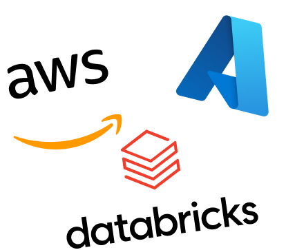

About Me
I am a data professional with over 7 years of experience in Data Analytics and Business Intelligence.
I am specialized in the development of scalable analytical solutions using Power BI.

I combine advanced skills in Power BI together with SQL, and Python to manage the full data lifecycle: from data preparation and modeling to the design of interactive,
high-performance dashboards.
I have worked across complex cloud ecosystems, integrating data and processes on platforms such as Azure, AWS, and Databricks, delivering value to business projects across various industries.

In addition to hands-on experience, I actively invest in continuous learning and stay up to date with the latest technologies in the data and cloud ecosystem.
I hold several Microsoft certifications that reflect both my technical expertise and my commitment to professional growth, including the
PL-300 (Power BI Data Analyst Associate), DP-600 (Fabric Analytics Engineer Associate),
DP-900 (Azure Data Fundamentals), and AZ-900 (Azure Fundamentals).